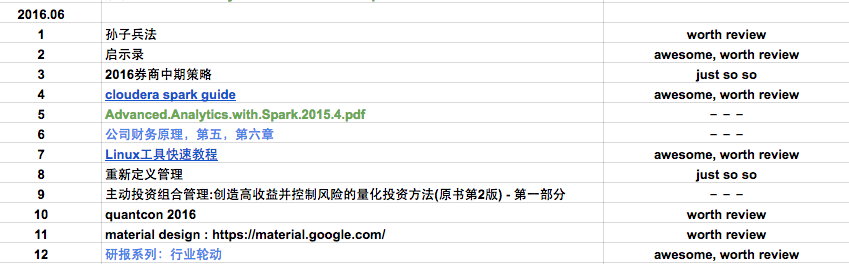
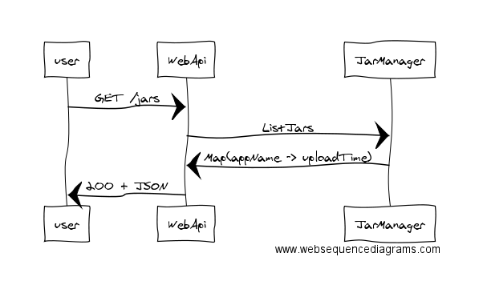

『 读书笔记 』6月读书总结｜博文推荐
2016-07-17
写在前面
计划是每月读 5-10 本书，书籍类型大概是三个方面的：金融，技术，创业。之所以选择这三个方面，一方面是因为自己对这三个方面都很有兴趣，其次是被 linkedin 创始人 Hoffman 的 ABZ 理论 深度影响。建议大家都看看 abz 理论那篇文章，如果我有空，也会整理一些常用的这类理论模型到博客里的。
月底读书总结的形式都很简单，只是简单的一个列表和简单的书评，对觉得比较好的书会有单独的读书笔记。另外推荐大家用 excel 来做一些简单的工作管理，我现在就用 google docs 来做工作安排和读书计划，个人感觉比一些常用的神马协同软件强大太多了，简单，够用，就行了。工作中见过太多人把时间都花到使用那些协同软件上去，不得不说避重就轻了，适得其反，哈哈。
下面是一张我用 google docs 来做本月读书安排的截图，不同颜色代表不同类别的数据，清晰明了实用。

ps: 我对好书的定义很简单：
- 给自己有所启发的
- 高质量的，专业的教程类书籍
- 后期会再度回首的书
- 看完后会打算赠送给盆友看的书
- 留着给儿子看的书 [好吧，目前我只有个宝贝侄儿，哈哈]
- 最后一条，印刷质量要好
上月读书总结：『 读书笔记 』5月读书总结｜博文推荐
1. 读书总结
1.1 孙子兵法
这本书买了不知道有多少年了，但是一直没看过。自从今年3月份培养读书习惯来，就把这本书列上了书单，很是期待这本书，作为6月的第一本书来读。内容方面自然不必多说，满满的都是干货，但是这本书传承了千年，我自始自终都抱着敬畏的态度来读，不能随意的评论。但是，我想说，这本书里的内容，不论在从商，创业，处事，个人规划方面都很有借鉴意义。博大精深，值得反复品读。
总结：抱着敬畏的形态来读这本书，之后还会不间断的回顾，希望能多吸取一些精华和感悟。
推荐指数：* * * * *
1.2 研报：行业轮动系列
推荐指数：* * * * *
1.3 Material Design 中文版
最近两个月对 Material Design 很感兴趣，为了系统的了解 Material Design 的由来，原则和内在的哲理，我安排了这个月读一读 Material Design 的官方资料，因为自己没有这方面的背景，所以是先看极客学院翻译的中文文档，有问题和不理解的地方再阅读 google 的官方文档。
随着 Material Design 最近的流行，一些产品开始采用 Material Design，但是最近又看到有公司抛弃 Material Design。作为一个工程师，我无法评定 Material Design 的好与坏，但是我能说的是，作为一个 PM 或者 Designer，就算不用 Material Design，也是很有必要去了解，甚至是深入研究 Material Design 的。
总结：作为一个工程师，我还是很喜欢 Material Design 的风格和哲理的。
推荐指数：* * * * *
1.4 重新定义管理: 合弄制改变世界
我参加过公司组织的合弄制培训，结合起当时的培训，这本书的内容，已经一些网上总结的 ppt，真心不觉得合弄制这个东西有什么革命性的优势，本质上还是没有什么改变。未来的一两个月我也参与到公司的一个合弄制试水的项目里了，体验体验所谓的合弄制有哪些优劣。
就合弄制本身而言，其实也没什么坏处，但是在玩看来合弄制是对传统的企业管理矫枉过正了。我们其实只需要参考其中的一些概念和方法，在扁平化管理的基础上搞出一些微创新，制定一些公司内部微创新的规则和奖励机制就完全足够了。而且，我强烈建议公司内部在搞微创新的时候，千万不要往合弄制的身上生搬硬套一些概念，合弄制的概念真心太多了，心累啊～～～
总结：虽然我不赞同合弄制的很多做法和思想，但捍卫它为自己争取一丝地位的权利吧。
推荐指数：* * * * *
1.5 启示录：打造用户喜爱的产品
很不错的一本书，大多数人会把这本书当作产品方面的书，可我觉得，这本书不仅仅是为产品经理写的，还是为公司管理层，项目负责人写的。书很薄，但内容很优质，很久没有看到这种干货漫漫的书了。里面有很多在现实中会遇见的问题，作者的叙述能力很强，有时候会让读者如临其境。很具有实操性的一本书，建议第一遍快速看完，然后第二遍细细品读，之后可以时不时拿来翻翻，对比现实工作中遇到的一些问题场景。
最后两章［40: 最佳实践经验；41: 产品经理的反省清单］值得反复品读。
对了，这本书里也提到了一些不错的其它书籍，感兴趣的也可以看看作者推荐的那些书。
总结：非常好，实操性强，没有废话，干货很多的一本书。建议产品经理，工程师，项目负责人，公司管理层的人都应该读读。
推荐指数：* * * * *
1.6 cloudera spark guide
非常高质量的 spark guide，可以和官方的一起读读，里面会有一些比较细节的问题，比如在 python 编写的 spark 应用中，如何打包应用的依赖等。遇到了很多我现实生活中遇到的问题，很有帮助。
总结：建议和官方 guide 一起看看，能看完，看懂 70% 就可以直接开干了。
推荐指数：* * * * *
1.7 公司财务原理，第五，第六章
啥都不说了，看过我之前的读书总结的都知道，我对这本书简直就是四粉，粉得彻彻底底的。
总结：best of the best.
推荐指数：* * * * *
1.8 Linux工具快速教程
给实习生推荐的 linux 基本教程，我自己也再看了一遍，非常好，比一些贴命令参数的纸板书好了几个档次。不过里面有一些很细节的，不太常用的东西，不是太有必要一口吃完。建议初学者看完基础那一栏就 ok 了，以后遇到问题了再来翻翻。
总结：The power of open-source, more than you can imagine.
推荐指数：* * * * *
1.9 quantcon 2016
quantcon 2016 上的所有 slide，video 只看了一部分。很有用，很有启发，这个资料是私密的，建议想学习的矿友们去官方网站上咨询咨询。
总结：风已来，等你一起飞。
推荐指数：* * * * *
1.10 2016券商中期策略
总结：券商中期策略简直白花齐放，不仅是观点，还有行文组织上，有的甚至给人的感觉就是一两天赶工出来的报告。
推荐指数：* *
2. 优质产品
不错的在线流程图应用。
user->WebApi: GET /jars
WebApi->JarManager: ListJars
JarManager->WebApi: Map(appName -> uploadTime)
WebApi->user: 200 + JSON